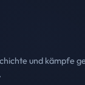
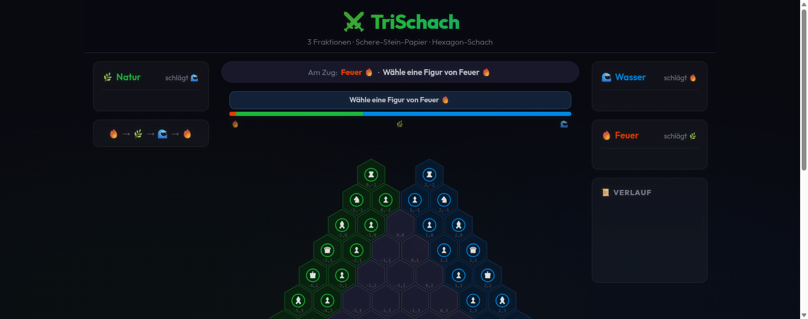

9×9 Brett, Feenfiguren (Erzbischof, Kanzler, Engel), 5 KI-Persönlichkeiten, Engine-Analyse, Eröffnungs-Terner, Kampagnen, 3D-Schlachtmodus.
Aktive Projektplattform — zwei Spiele, ein Repo
Base3 Chess Platform
Zwei einzigartige Schachvarianten auf einer Plattform — vom klassischen 9×9 Brett mit Feenfiguren bis zum strategischen 3-Spieler-Hex-Schach. Code & Entwicklung leben in den eigenständigen Repos.
Die aktive Entwicklung findet in den eigenständigen Projekten Schach9x9 und Trischach statt.
Warum zwei Spiele?
base3 vereint zwei Experimente an der Grenze dessen, was Schach sein kann — ohne sich zu vergrößern, ohne Multiplayer-Komplex, ohne Runterfahren auf Konvention. Das Eine ist tiefes, ruhiges Schaffin im 9×9 mit drei zusätzlichen Figuren. Das Andere ist ein Ringkampf auf sechseckigem Brett, in dem drei Fraktionen in Stein-Schere-Papier-Beziehungen stehen. Beide teilen nur einen Ursprung: Neugier auf Schach-Regeln, mehr Raum geben, ohne das Spiel zu zerstören.
3-Spieler-Hex-Schach, 3 Fraktionen (Feuer/Natur/Wasser), Stein-Schere-Papier-Kampf, Alpha-Beta, Auto-Battle-Turniere mit Elo, Replay-System (TSPN).
Was ist neu
- Interaktiver Post-Game-Replay-Overlay — Partie nach dem Ende Schritt für Schritt wiederbespielbar
- Opening Book erweitert auf 2604 eindeutige Positionen (v1.6.1)
- Reproduzierbare Illegal-Move-Tests versionisiert für Debugging
- Security: js-yaml auf 5.3.0 gesperrt (CVE-2026-59870)
- NNUE v2 mit Elo-Pipeline und Parallel Search
- Tutorial-Modus für neue Spieler
- Replay-Analyse: Partie wiederholbar mit Zug-Kommentaren
- WTFPL-Lizenz hinzugefügt

Schach9x9
v1.6.2 ·9×9 Brett mit Feenfiguren. Erzbischof, Kanzler & Engel.
- 9×9 Brett mit Feenfiguren
- 5 KI-Persönlichkeiten + adaptiv
- Engine-Analyse, Zug-Qualität & Variantenbaum
- Eröffnungs-Trainer
- Kampagnen & Talentbaum (XP)
- 3D-Schlachtmodus (Three.js)
- PWA & Mobile Ready

Trischach
v1.4.0 ·3-Spieler Hexagonales Schach. Stein-Schere-Papier Kampfmechanik.
- 3 Fraktionen (Feuer/Natur/Wasser)
- RPS Kampfmechanik
- Engine: Alpha-Beta, 4 Persönlichkeiten
- Auto-Battle Turniere + Elo
- Replay (TSPN) & Opening Book
- PWA & Mobile (Swipe/Touch)
2
Spiele
9×9
Schach9x9 Brett
3
Fraktionen
∞
Möglichkeiten